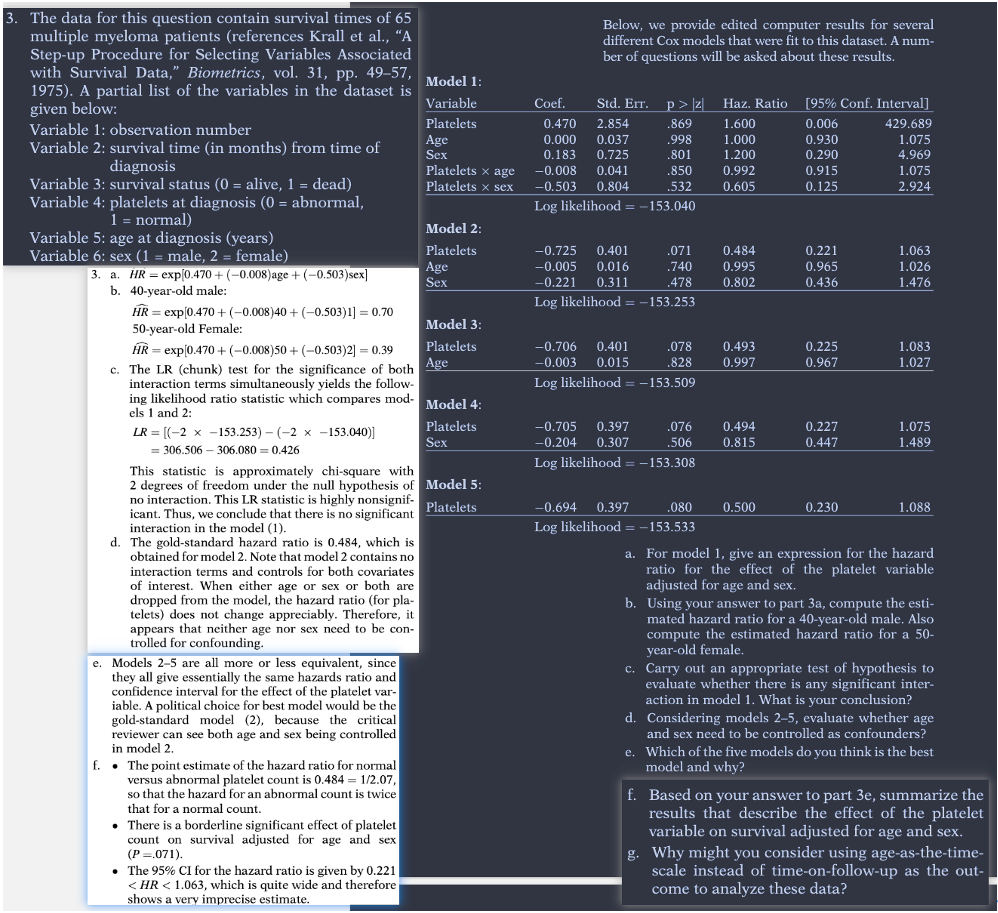

KK书，chapter 3 Practice Exercises KM书 8.1，8.5 1）使用软件built-in函数，完成题目 2）使用自编code，完成题目中的Wald test, Likelihood ratio test 3）使用软件built-in函数，相持计算的argument更换为“exact”、“efron”、“descrete”，重复分析，看看结果差得大不大 R user 可加载下面的包导入数据 library(KMsurv) data(hodg)
KK书 3 Practice Exercises

KM 8.1
(a)
# 自己的代码 结果对 但是用了factor 题目问编码 rm (list = ls ())<- c ('tidyverse' ,'skimr' ,'survival' ,'KMsurv' )invisible (lapply (pkgs, function (x) suppressMessages (library (x,character.only = TRUE )) ))data (hodg)$ new <- ifelse (hodg$ gtype== 1 & hodg$ dtype== 1 ,'allo_nhl' ,ifelse (hodg$ gtype== 2 & hodg$ dtype== 1 ,'autlo_nhl' ,ifelse (hodg$ gtype== 1 & hodg$ dtype== 2 ,'allo_hod' ,'auto_hod' ))) %>% factor () %>% relevel (.,ref = "allo_nhl" )<- coxph (Surv (time,delta)~ new,data= hodg,ties = 'breslow' )summary (model)
Call:
coxph(formula = Surv(time, delta) ~ new, data = hodg, ties = "breslow")
n= 43, number of events= 26
coef exp(coef) se(coef) z Pr(>|z|)
newallo_hod 1.8297 6.2323 0.6753 2.709 0.00674 **
newautlo_nhl 0.6639 1.9423 0.5643 1.177 0.23939
newauto_hod 0.1537 1.1662 0.5888 0.261 0.79406
---
Signif. codes: 0 '***' 0.001 '**' 0.01 '*' 0.05 '.' 0.1 ' ' 1
exp(coef) exp(-coef) lower .95 upper .95
newallo_hod 6.232 0.1605 1.6589 23.414
newautlo_nhl 1.942 0.5149 0.6427 5.870
newauto_hod 1.166 0.8575 0.3677 3.698
Concordance= 0.605 (se = 0.061 )
Likelihood ratio test= 7.89 on 3 df, p=0.05
Wald test = 9.26 on 3 df, p=0.03
Score (logrank) test = 11.08 on 3 df, p=0.01
# 编码的做法 library (survival)library (KMsurv)data (hodg)# NhlAllo: baseline hazard <- hodg$ dtype== 2 & hodg$ gtype== 1 <- hodg$ dtype== 1 & hodg$ gtype== 2 <- hodg$ dtype== 2 & hodg$ gtype== 2 <- coxph (Surv (time, delta) ~ HodAllo + NhlAuto + HodAuto, ties= "breslow" , data = hodg)
Call:
coxph(formula = Surv(time, delta) ~ HodAllo + NhlAuto + HodAuto,
data = hodg, ties = "breslow")
coef exp(coef) se(coef) z p
HodAlloTRUE 1.8297 6.2323 0.6753 2.709 0.00674
NhlAutoTRUE 0.6639 1.9423 0.5643 1.177 0.23939
HodAutoTRUE 0.1537 1.1662 0.5888 0.261 0.79406
Likelihood ratio test=7.89 on 3 df, p=0.04825
n= 43, number of events= 26
# compare breslow, exact, efron <- update (fitA, ties= "exact" )<- update (fitA, ties= "efron" )cbind (coef (fitA), coef (fitA.exact), coef (fitA.efron))
[,1] [,2] [,3]
HodAlloTRUE 1.829744 1.8311641 1.8327549
NhlAutoTRUE 0.663868 0.6665802 0.6702933
HodAutoTRUE 0.153713 0.1541645 0.1536882
(b)
<- coxph (Surv (time,delta)~ gtype * dtype,data= hodg,ties = 'breslow' )summary (model)
Call:
coxph(formula = Surv(time, delta) ~ gtype * dtype, data = hodg,
ties = "breslow")
n= 43, number of events= 26
coef exp(coef) se(coef) z Pr(>|z|)
gtype 3.00377 20.16134 1.30504 2.302 0.02135 *
dtype 4.16964 64.69233 1.45172 2.872 0.00408 **
gtype:dtype -2.33990 0.09634 0.85168 -2.747 0.00601 **
---
Signif. codes: 0 '***' 0.001 '**' 0.01 '*' 0.05 '.' 0.1 ' ' 1
exp(coef) exp(-coef) lower .95 upper .95
gtype 20.16134 0.04960 1.56196 260.2361
dtype 64.69233 0.01546 3.75963 1113.1660
gtype:dtype 0.09634 10.38019 0.01815 0.5114
Concordance= 0.605 (se = 0.061 )
Likelihood ratio test= 7.89 on 3 df, p=0.05
Wald test = 9.26 on 3 df, p=0.03
Score (logrank) test = 11.08 on 3 df, p=0.01
(c)
\[
h(t)=h_0(t)exp(\beta_1Auto + \beta_2 HOD + \beta3 Auto*HOD)
\] allo_nhl 0 0
allo_hod 0 1
nhl_auto 1 0
hod__auto 1 1
\[\begin{align}
\beta_1 & = 1.5 \\
\beta_2 &= 2 \\
\beta_1 + beta_2 +\beta_3 &= 0.5 \\
\beta_3 &= 0.5-1.5-2 =-3
\end{align}\]
KM 8.5
$ new <- ifelse (hodg$ gtype== 1 & hodg$ dtype== 1 ,'allo_nhl' ,ifelse (hodg$ gtype== 2 & hodg$ dtype== 1 ,'autlo_nhl' ,ifelse (hodg$ gtype== 1 & hodg$ dtype== 2 ,'allo_hod' ,'auto_hod' ))) %>% factor () %>% relevel (.,ref = "allo_nhl" )<- coxph (Surv (time,delta)~ new,data= hodg,ties = 'breslow' )summary (model)
Call:
coxph(formula = Surv(time, delta) ~ gtype * dtype, data = hodg,
ties = "breslow")
n= 43, number of events= 26
coef exp(coef) se(coef) z Pr(>|z|)
gtype 3.00377 20.16134 1.30504 2.302 0.02135 *
dtype 4.16964 64.69233 1.45172 2.872 0.00408 **
gtype:dtype -2.33990 0.09634 0.85168 -2.747 0.00601 **
---
Signif. codes: 0 '***' 0.001 '**' 0.01 '*' 0.05 '.' 0.1 ' ' 1
exp(coef) exp(-coef) lower .95 upper .95
gtype 20.16134 0.04960 1.56196 260.2361
dtype 64.69233 0.01546 3.75963 1113.1660
gtype:dtype 0.09634 10.38019 0.01815 0.5114
Concordance= 0.605 (se = 0.061 )
Likelihood ratio test= 7.89 on 3 df, p=0.05
Wald test = 9.26 on 3 df, p=0.03
Score (logrank) test = 11.08 on 3 df, p=0.01
<- coxph (Surv (time, delta) ~ 1 , ties= "breslow" , data = hodg)anova (model1, model2)
Analysis of Deviance Table
Cox model: response is Surv(time, delta)
Model 1: ~ new
Model 2: ~ 1
loglik Chisq Df Pr(>|Chi|)
1 -83.350
2 -87.298 7.8942 3 0.04825 *
---
Signif. codes: 0 '***' 0.001 '**' 0.01 '*' 0.05 '.' 0.1 ' ' 1
Analysis of Deviance Table
Cox model: response is Surv(time, delta)
Terms added sequentially (first to last)
loglik Chisq Df Pr(>|Chi|)
NULL -87.298
new -83.350 7.8942 3 0.04825 *
---
Signif. codes: 0 '***' 0.001 '**' 0.01 '*' 0.05 '.' 0.1 ' ' 1
<- coxph (Surv (time,delta)~ gtype * dtype,data= hodg,ties = 'breslow' )summary (model)
Call:
coxph(formula = Surv(time, delta) ~ gtype * dtype, data = hodg,
ties = "breslow")
n= 43, number of events= 26
coef exp(coef) se(coef) z Pr(>|z|)
gtype 3.00377 20.16134 1.30504 2.302 0.02135 *
dtype 4.16964 64.69233 1.45172 2.872 0.00408 **
gtype:dtype -2.33990 0.09634 0.85168 -2.747 0.00601 **
---
Signif. codes: 0 '***' 0.001 '**' 0.01 '*' 0.05 '.' 0.1 ' ' 1
exp(coef) exp(-coef) lower .95 upper .95
gtype 20.16134 0.04960 1.56196 260.2361
dtype 64.69233 0.01546 3.75963 1113.1660
gtype:dtype 0.09634 10.38019 0.01815 0.5114
Concordance= 0.605 (se = 0.061 )
Likelihood ratio test= 7.89 on 3 df, p=0.05
Wald test = 9.26 on 3 df, p=0.03
Score (logrank) test = 11.08 on 3 df, p=0.01
Analysis of Deviance Table
Cox model: response is Surv(time, delta)
Model 1: ~ 1
Model 2: ~ gtype * dtype
loglik Chisq Df Pr(>|Chi|)
1 -87.298
2 -83.350 7.8942 3 0.04825 *
---
Signif. codes: 0 '***' 0.001 '**' 0.01 '*' 0.05 '.' 0.1 ' ' 1
2.5 % 97.5 %
-0.442074 1.769810
The following object is masked from 'package:survival':
rats
wald.test (b = coef (model3), Sigma = vcov (model3), Terms = 1 )
Wald test:
----------
Chi-squared test:
X2 = 5.3, df = 1, P(> X2) = 0.021
library (aod) # wald.test wald.test (b = coef (model3), Sigma = vcov (model3), Terms = 2 : 3 )
Wald test:
----------
Chi-squared test:
X2 = 8.3, df = 2, P(> X2) = 0.016
<- t (coef (model3)[2 : 3 ]- 0 ) %*% solve (vcov (model3)[2 : 3 ,2 : 3 ]) %*% (coef (model3)[2 : 3 ]- 0 )pchisq (q = ws.e, df = 2 , lower.tail = F)